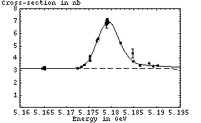
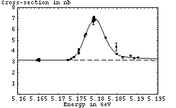

Upsilon Scans: 01/03/02 Pass1 Fit
Fit parameters:
Chi^2 / dof = 60.93 / 59 = 1.033 |  |
Fit parameters:
Chi^2 / dof = 60.93 / 59 = 1.033 |  |
Otherwise, the runs used in this fit are exactly those hilighted in the run info list.
(Parameters are ordered: area, mean, sigma, background)
None.
run<tab>energy<tab>xc<tab>xc_err ----------------------------------- 122766 5.17702 5.56 0.08 122767 5.19034 3.43 0.06 122768 5.17405 3.48 0.06 122769 5.18205 5.26 0.07 122770 5.17243 3.2 0.05 122771 5.18476 4.41 0.37 122772 5.1849 3.75 0.07 122773 5.18843 3.58 0.06 122776 5.17679 5.41 0.09 122777 5.18936 3.37 0.06 122778 5.17335 3.3 0.06 122779 5.18641 3.42 0.06 122780 5.17528 3.85 0.13 122781 5.17527 4.16 0.07 122783 5.16506 3.13 0.05 122786 5.16508 3.28 0.06 122787 5.1651 3.13 0.08 122789 5.1651 3.18 0.05 122796 5.16505 3.18 0.05 122797 5.16462 3.17 0.05 122798 5.1651 3.26 0.05 122799 5.1651 3.23 0.05 122800 5.16513 3.17 0.05 122801 5.1651 3.21 0.05 122802 5.1651 3.22 0.05 122803 5.16513 3.19 0.05 122804 5.16513 3.11 0.05 122805 5.16513 3.19 0.05 122808 5.16513 3.23 0.1 122809 5.16513 3.14 0.06 122810 5.16513 3.14 0.05 122812 5.17901 6.98 0.07 122813 5.17904 7. 0.08 122815 5.17905 6.95 0.07 122816 5.17907 7. 0.08 122819 5.17907 7.11 0.11 122820 5.17904 7.01 0.07 122821 5.17906 6.98 0.07 122823 5.17909 7.05 0.07 122824 5.17907 6.93 0.07 122825 5.17907 6.93 0.07 122826 5.17905 6.91 0.07 122827 5.17911 6.93 0.07 122829 5.17907 6.97 0.09 122830 5.17907 6.99 0.07 122831 5.17905 6.9 0.07 122832 5.17908 6.86 0.07 122833 5.17933 6.9 0.07 122835 5.17913 6.89 0.07 122838 5.17907 7.14 0.11 122841 5.17907 7. 0.07 122842 5.17908 6.93 0.06 122843 5.1791 7.04 0.06 122844 5.17907 6.99 0.06 122845 5.1791 6.86 0.06 122846 5.1791 6.88 0.06 122847 5.1791 7.08 0.07 122853 5.1789 6.92 0.11 122855 5.17893 6.82 0.08 122856 5.17895 6.66 0.19 122858 5.17898 6.94 0.07 122859 5.17895 6.92 0.06 122860 5.179 6.9 0.07
 Jim Pivarski <mccann@mail.lns.cornell.edu>
Last Modified: Friday, January 18, 2002
Jim Pivarski <mccann@mail.lns.cornell.edu>
Last Modified: Friday, January 18, 2002
 0.44 MeV nb
0.44 MeV nb